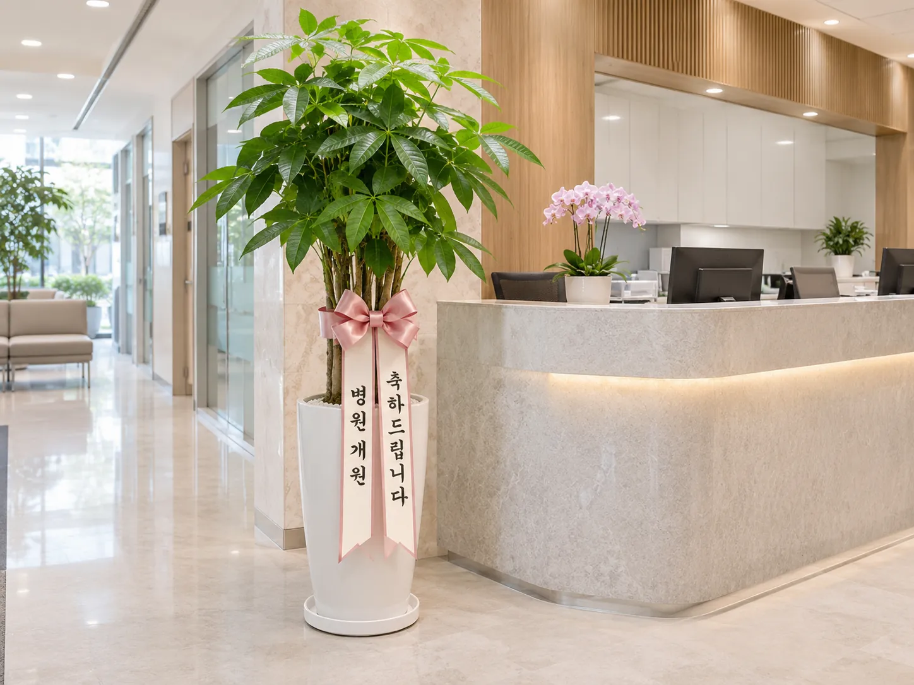
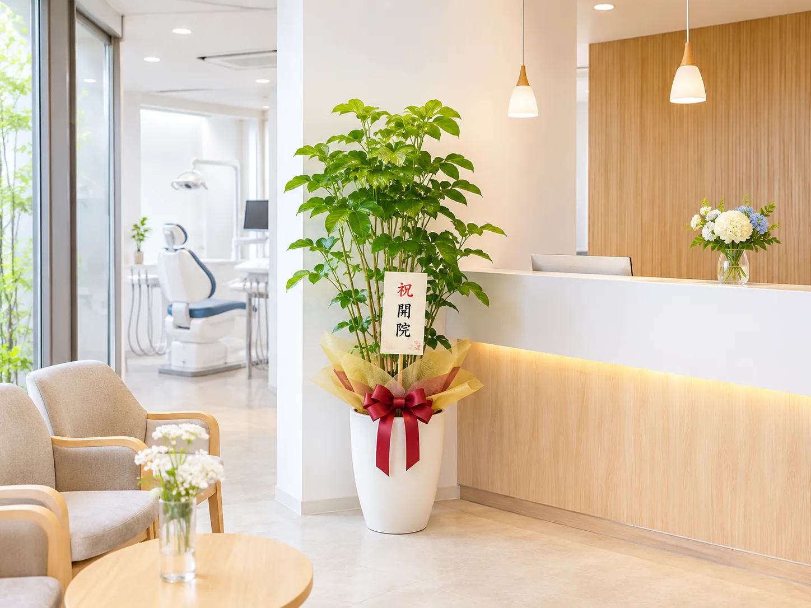
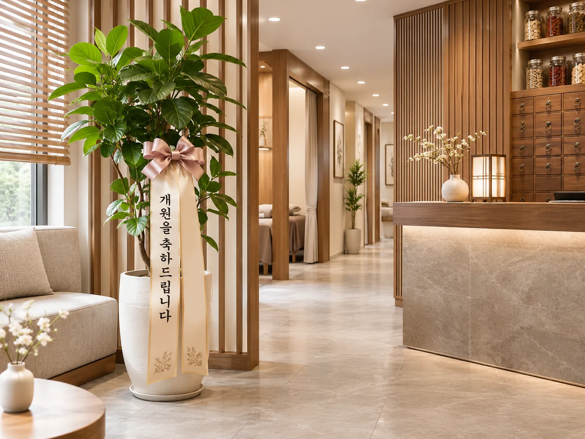

치과 개원축하화분
치과의원 정식 명칭과 층수, 접수대 주변 공간을 먼저 확인하세요. 화분을 둘 위치와 관리 여건도 함께 고려합니다.
치과 개원화분 전화 상담 ↗새로운 시작을 축하하는 식물 선물. 받는 공간, 축하 일정, 리본 문구와 예산을 정리해 전화로 상담하세요.
* 사진은 AI로 제작한 개원 축하 연출 이미지이며, 실제 판매·배송 사례가 아닙니다.
업종마다 공간과 수령 방식이 다를 수 있어, 주문 전에 필요한 정보를 먼저 확인합니다.



* 업종별 이미지는 실제 납품 상품·고객 사례가 아닌 AI 연출 예시입니다. 이미지 안 리본 글자는 주문에 사용되는 확정 문구가 아닙니다.
쇼핑몰에서 제품을 일일이 고르지 않아도 됩니다. 먼저 필요한 정보를 알려주세요.
안산시 내 도로명주소, 건물명, 층·호수, 수령처 연락처
개원식과 실제 수령 가능일, 희망 예산·화분 크기
받는 의료기관명, 축하 문구와 보내는 사람 이름
실제 상품과 가격·배송 가능 여부를 확인해 주문 결정
지역·업종별 문구 POOL에서 선별한 상담 안내입니다. 실제 조건은 주문 전 확인해야 합니다.
진료 시작일과 개원 축하 행사가 서로 다른 날일 수 있습니다. 행사 일정과 실제 수령 가능 시간을 따로 확인합니다. 상황에 맞지 않는 선물보다 받는 곳의 실제 여건을 먼저 살펴보는 편이 좋습니다.
진료실이 바쁜 치과에서는 관리가 쉬운 화분을 원하기도 합니다. 햇빛과 물주기 조건을 설명받고 선택합니다. 물주기를 전혀 하지 않아도 된다고 광고하지 않습니다. 크기와 관리 난도는 판매 가능한 제품 범위에서 비교해 결정하세요.
한의원 개원식 날짜와 실제 진료 시작일이 다를 수 있습니다. 어느 일정에 맞춰 화분을 받는지 미리 정합니다. 진료 시작일을 당연히 개원식과 같은 날로 보지 않습니다. 크기와 관리 난도는 판매 가능한 제품 범위에서 비교해 결정하세요.
실제 직원이 인계받을 수 있는 위치를 정합니다. 수령할 장소를 확인하지 않은 채 복도에 두지 않습니다. 원하는 조건을 정리한 뒤 꽃이랑 1844-0644로 현재 가능한 선택지를 문의하세요.
축 개업과 축 개원 중 선호 문구를 선택합니다. 검색 키워드와 리본 문구를 무조건 똑같이 쓰지 않습니다. 원하는 조건을 정리한 뒤 꽃이랑 1844-0644로 현재 가능한 선택지를 문의하세요.
정확한 번호 확인 없이 접수를 끝내지 않습니다. 잘못된 휴대전화 번호는 배송 연락을 어렵게 만듭니다 확인되지 않은 조건을 확정 안내로 표시하지 않는 것이 좋습니다.
개원식이 지나치게 바쁘거나 수령처가 부재중이라면 화분 전달에 어려움이 생길 수 있습니다.
전화 주문 전에 많이 확인하는 항목을 정리했습니다.
병원·치과·한의원 개원 축하라는 같은 목적에서 함께 사용되는 검색 표현입니다. 실제 주문은 식물 종류, 크기, 리본과 배송지 조건을 기준으로 상담합니다.
배송 가능 여부와 배송비는 실제 도로명주소, 날짜 및 상품에 따라 달라질 수 있습니다. 전화로 상세 주소를 알려주시면 확인할 사항을 안내받을 수 있습니다.
축 개원, 개원을 축하드립니다 등의 표현을 참고할 수 있습니다. 보내는 분 이름과 의료기관 정식 명칭은 리본 제작 전에 정확히 확인합니다.
희망일과 시간은 전달할 수 있지만 실제 가능 여부와 정확한 배송 조건은 전화 상담 후 확인해야 합니다.
이 페이지의 이미지는 AI가 제작한 상황 연출 이미지로 실물 판매상품 사진이 아닙니다. 실제 가능한 품종, 크기, 화기와 리본 디자인은 전화 상담에서 확인해주세요.
의료기관 명칭, 정확한 주소와 층수, 수령 가능 일시, 연락처, 예산, 리본 문구를 준비하면 상담이 수월합니다.
이전 축하 선물로 화분을 선택할 수 있습니다. 리본 문구는 실제 상황에 맞춰 조정하세요.
상황에 따라 축 이전 또는 새로운 출발을 축하하는 문구를 선택할 수 있습니다.
직원 인계가 가능한지, 대체 연락처가 있는지 먼저 협의하세요.
안산시 병원·치과·한의원 개업화분 · 개원축하화분
☎ 1844-0644 전화 주문 상담